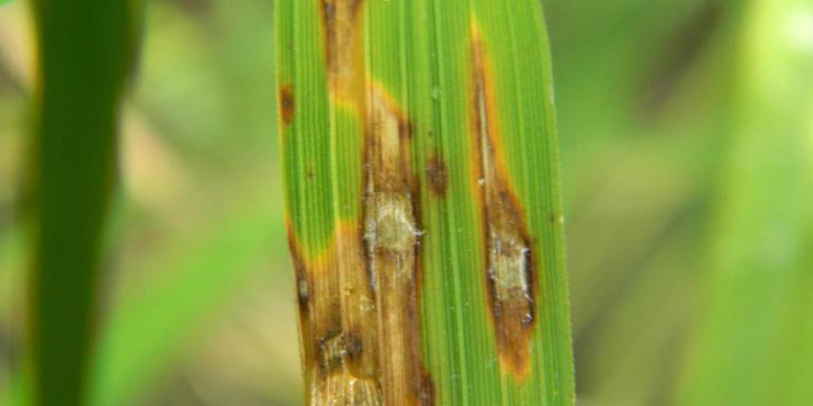

Rice Blast is a fungal disease caused by the Magnaporthe oryzae fungus, which affects rice plants and results in high yield loss.
Symptoms
1. Leaf Symptoms
- Diamond-shaped lesions with gray or whitish centers and dark brown or reddish borders.
- Lesions may expand, causing the leaf to die or curl.
Course of infection: Severely infected leaves wilt, causing a decrease in photosynthesis.
2.Node Symptoms
- Black lesions on nodes (where the leaf attaches to the stem).
- The node can rot, leading to plant death or severe weakening.
3.Neck Blast
- Affects the neck of the rice panicle (grain-bearing part), causing the grains to turn white, shrivel, and not fill properly.
- Can lead to unfilled panicles, reducing yield substantially.
4.Collar Blast
- Lesions appear on the collar (junction of leaf and sheath), causing the leaf to fall off.
5.Root Symptoms
- In some cases, the roots may also show darkened lesions.
Precautions
1.Use of Resistant Varieties
- Plant rice varieties that are resistant to rice blast. This is one of the most effective measures for reducing disease impact.
2.Field Hygiene
- Remove and burn crop residues to reduce fungal inoculum in the field
- Avoid leaving infected plant debris in the field as this can serve as a source of infection for the next crop cycle.
3.Balanced Fertilization
- Apply the right amount of nitrogen fertilizer. Excessive nitrogen can encourage more lush growth, which is more susceptible to infection.
4.Proper Water Management
- Maintain appropriate water levels in the field. Periodic drying of the field (alternate wetting and drying) may help reduce the severity of the disease
Treatments
1. Fungicides
- Systemic fungicides like tricyclazole, azoxystrobin, or propiconazole can be effective when applied early in the disease cycle.
- Fungicide applications should be timed correctly, especially at the early stage of infection or around panicle initiation.
2. Cultural Practices
- Improve air circulation by planting at appropriate densities to reduce humidity within the canopy, making it harder for the fungus to thrive.
- Avoid high seeding rates, as this can lead to overcrowded plants that are more prone to disease.
3.Regular Monitoring
- Check fields regularly for signs of infection, especially during periods of high humidity or rainy conditions, as these favor the spread of the rice blast fungus.
- Early detection allows for more timely interventions with fungicides or cultural measures.